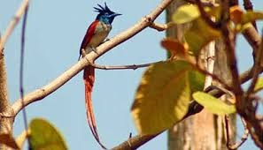
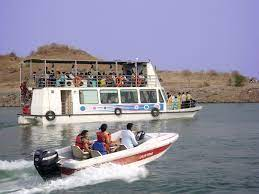

Bargi Dam is located About 40 km.
from Jabalpur city, Tourist Destination Bargi Dam is built on Narmada river.
Tourists can enjoy water-sports in Bargi Dam.
The height of the dam is 69 m and length is 5.4 km.
There is also a cruise in the reservoir water on a boat / cruise liner called as Narmada Queen.
Other facilities like Speed Boating, Water Scooters, Paddle Boating have been provided for the tourists.
This is an ideal place for bird watching and wather sports.You can enjoy speed boating
Bargidam main attractions are water sports such as speed boating, Water scooters, Paddle Boating and bird watching around.
Bargi Dam is also good for nature tourism.
The Bargi Dam is fairly close to River Narmada.
Beside generating power, the area has been developed as a tourist spot as well.
